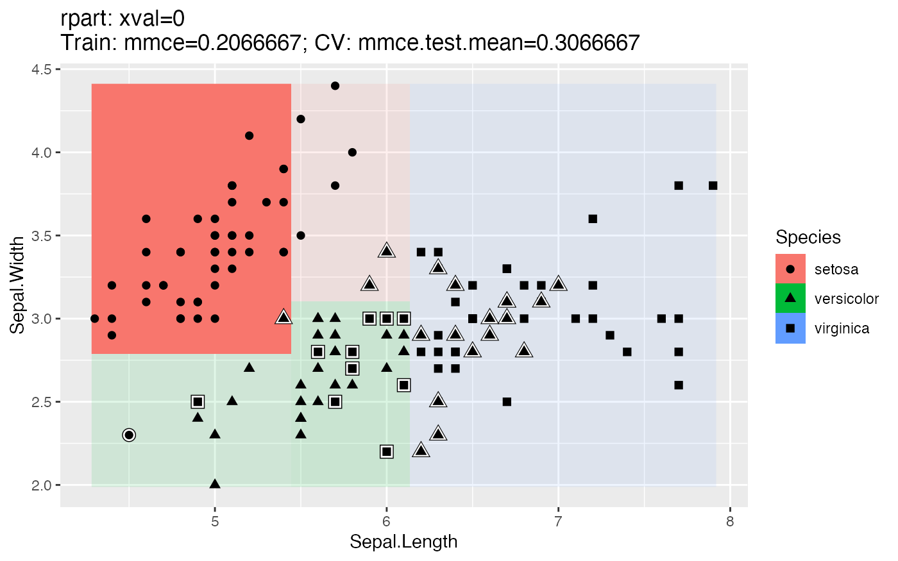
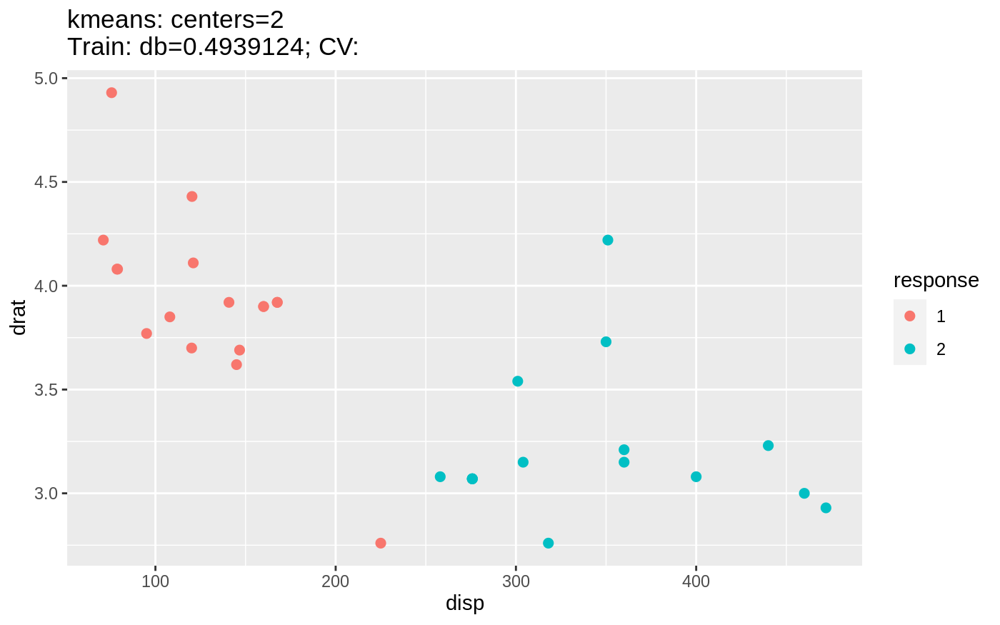
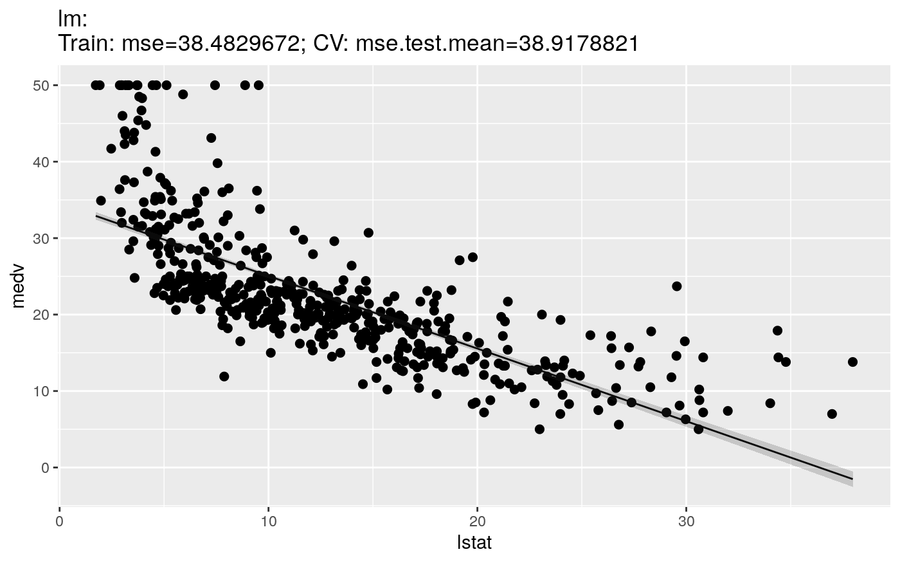
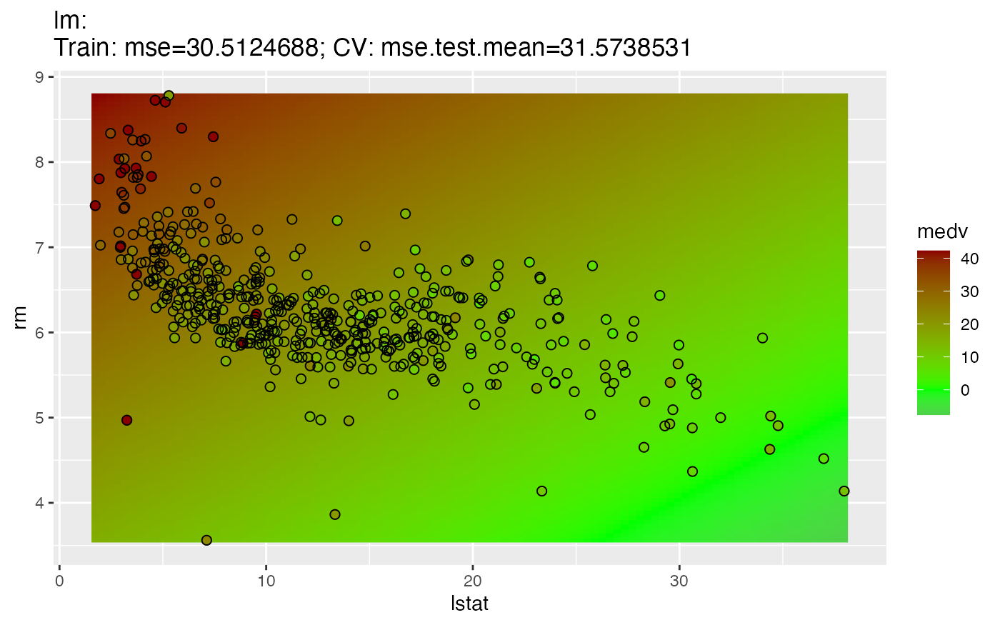

Predicting the target values for new observations is implemented the same way as most of the other predict methods in R. In general, all you need to do is call predict (predict.WrappedModel()) on the object returned by train() and pass the data you want predictions for.
There are two ways to pass the data:
- Either pass the
Task()via thetaskargument or - pass a
data.framevia thenewdataargument.
The first way is preferable if you want predictions for data already included in a Task().
Just as train(), the predict (predict.WrappedModel()) function has a subset argument, so you can set aside different portions of the data in Task() for training and prediction (more advanced methods for splitting the data in train and test set are described in the section on resampling).
In the following example we fit a gradient boosting machine (gbm::gbm()) to every second observation of the BostonHousing (mlbench::BostonHousing()) data set and make predictions on the remaining data in bh.task().
n = getTaskSize(bh.task) train.set = seq(1, n, by = 2) test.set = seq(2, n, by = 2) lrn = makeLearner("regr.gbm", n.trees = 100) mod = train(lrn, bh.task, subset = train.set) task.pred = predict(mod, task = bh.task, subset = test.set) task.pred ## Prediction: 253 observations ## predict.type: response ## threshold: ## time: 0.00 ## id truth response ## 2 2 21.6 22.27841 ## 4 4 33.4 38.92484 ## 6 6 28.7 25.36387 ## 8 8 27.1 15.61735 ## 10 10 18.9 16.98708 ## 12 12 18.9 20.41749 ## ... (#rows: 253, #cols: 3)
The second way is useful if you want to predict data not included in the Task().
Here we cluster the iris data set without the target variable. All observations with an odd index are included in the Task() and used for training. Predictions are made for the remaining observations.
n = nrow(iris) iris.train = iris[seq(1, n, by = 2), -5] iris.test = iris[seq(2, n, by = 2), -5] task = makeClusterTask(data = iris.train) mod = train("cluster.kmeans", task) newdata.pred = predict(mod, newdata = iris.test) newdata.pred ## Prediction: 75 observations ## predict.type: response ## threshold: ## time: 0.00 ## response ## 2 2 ## 4 2 ## 6 2 ## 8 2 ## 10 2 ## 12 2 ## ... (#rows: 75, #cols: 1)
Note that for supervised learning you do not have to remove the target columns from the data. These columns are automatically removed prior to calling the underlying predict method of the learner.
Accessing the prediction
Function predict() returns a named list of class Prediction(). Its most important element is $data which is a data.frame that contains columns with the true values of the target variable (in case of supervised learning problems) and the predictions. Use as.data.frame (Prediction()) for direct access.
In the following the predictions on the BostonHousing (mlbench::BostonHousing()) and the iris (datasets::iris()) data sets are shown. As you may recall, the predictions in the first case were made from a Task() and in the second case from a data.frame.
### Result of predict with data passed via task argument head(as.data.frame(task.pred)) ## id truth response ## 2 2 21.6 22.52737 ## 4 4 33.4 36.06190 ## 6 6 28.7 24.75354 ## 8 8 27.1 16.90299 ## 10 10 18.9 17.25558 ## 12 12 18.9 20.54365 ### Result of predict with data passed via newdata argument head(as.data.frame(newdata.pred)) ## response ## 2 1 ## 4 1 ## 6 1 ## 8 1 ## 10 1 ## 12 1
As you can see when predicting from a Task(), the resulting data.frame contains an additional column, called id, which tells us which element in the original data set the prediction corresponds to.
A direct way to access the true and predicted values of the target variable(s) is provided by functions getPredictionTruth (getPredictionResponse()) and [getPredictionResponse()].
head(getPredictionTruth(task.pred)) ## [1] 21.6 33.4 28.7 27.1 18.9 18.9 head(getPredictionResponse(task.pred)) ## [1] 22.52737 36.06190 24.75354 16.90299 17.25558 20.54365
Regression: Extracting standard errors
Some learners provide standard errors for predictions, which can be accessed in mlr. An overview is given by calling the function listLearners() and setting properties = "se". By assigning FALSE to check.packages learners from packages which are not installed will be included in the overview.
listLearners("regr", check.packages = FALSE, properties = "se")[c("class", "name")] ## class ## 1 regr.bcart ## 2 regr.bgp ## 3 regr.bgpllm ## 4 regr.blm ## 5 regr.btgp ## 6 regr.btgpllm ## 7 regr.btlm ## 8 regr.crs ## 9 regr.gausspr ## 10 regr.glm ## 11 regr.GPfit ## 12 regr.km ## 13 regr.laGP ## 14 regr.lm ## 15 regr.randomForest ## 16 regr.ranger ## name ## 1 Bayesian CART ## 2 Bayesian Gaussian Process ## 3 Bayesian Gaussian Process with jumps to the Limiting Linear Model ## 4 Bayesian Linear Model ## 5 Bayesian Treed Gaussian Process ## 6 Bayesian Treed Gaussian Process with jumps to the Limiting Linear Model ## 7 Bayesian Treed Linear Model ## 8 Regression Splines ## 9 Gaussian Processes ## 10 Generalized Linear Regression ## 11 Gaussian Process ## 12 Kriging ## 13 Local Approximate Gaussian Process ## 14 Simple Linear Regression ## 15 Random Forest ## 16 Random Forests
In this example we train a linear regression model (stats::lm()) on the BostonHousing (bh.task()) dataset. In order to calculate standard errors set the predict.type to "se":
### Create learner and specify predict.type lrn.lm = makeLearner("regr.lm", predict.type = 'se') mod.lm = train(lrn.lm, bh.task, subset = train.set) task.pred.lm = predict(mod.lm, task = bh.task, subset = test.set) task.pred.lm ## Prediction: 253 observations ## predict.type: se ## threshold: ## time: 0.00 ## id truth response se ## 2 2 21.6 24.83734 0.7501615 ## 4 4 33.4 28.38206 0.8742590 ## 6 6 28.7 25.16725 0.8652139 ## 8 8 27.1 19.38145 1.1963265 ## 10 10 18.9 18.66449 1.1793944 ## 12 12 18.9 21.25802 1.0727918 ## ... (#rows: 253, #cols: 4)
The standard errors can then be extracted using getPredictionSE().
head(getPredictionSE(task.pred.lm)) ## [1] 0.7501615 0.8742590 0.8652139 1.1963265 1.1793944 1.0727918
Classification and clustering: Extracting probabilities
The predicted probabilities can be extracted from the Prediction() using function getPredictionProbabilities(). Here is another cluster analysis example. We use fuzzy c-means clustering (e1071::cmeans()) on the mtcars (datasets::mtcars()) data set.
lrn = makeLearner("cluster.cmeans", predict.type = "prob") mod = train(lrn, mtcars.task) pred = predict(mod, task = mtcars.task) head(getPredictionProbabilities(pred)) ## 1 2 ## Mazda RX4 0.020400964 0.97959904 ## Mazda RX4 Wag 0.020360747 0.97963925 ## Datsun 710 0.007341207 0.99265879 ## Hornet 4 Drive 0.457052250 0.54294775 ## Hornet Sportabout 0.981291168 0.01870883 ## Valiant 0.242514386 0.75748561
For classification problems there are some more things worth mentioning. By default, class labels are predicted.
### Linear discriminant analysis on the iris data set mod = train("classif.lda", task = iris.task) pred = predict(mod, task = iris.task) pred ## Prediction: 150 observations ## predict.type: response ## threshold: ## time: 0.00 ## id truth response ## 1 1 setosa setosa ## 2 2 setosa setosa ## 3 3 setosa setosa ## 4 4 setosa setosa ## 5 5 setosa setosa ## 6 6 setosa setosa ## ... (#rows: 150, #cols: 3)
In order to get predicted posterior probabilities we have to create a Learner (makeLearner()) with the appropriate predict.type.
lrn = makeLearner("classif.rpart", predict.type = "prob") mod = train(lrn, iris.task) pred = predict(mod, newdata = iris) head(as.data.frame(pred)) ## truth prob.setosa prob.versicolor prob.virginica response ## 1 setosa 1 0 0 setosa ## 2 setosa 1 0 0 setosa ## 3 setosa 1 0 0 setosa ## 4 setosa 1 0 0 setosa ## 5 setosa 1 0 0 setosa ## 6 setosa 1 0 0 setosa
In addition to the probabilities, class labels are predicted by choosing the class with the maximum probability and breaking ties at random.
As mentioned above, the predicted posterior probabilities can be accessed via the getPredictionProbabilities() function.
head(getPredictionProbabilities(pred)) ## setosa versicolor virginica ## 1 1 0 0 ## 2 1 0 0 ## 3 1 0 0 ## 4 1 0 0 ## 5 1 0 0 ## 6 1 0 0
Classification: Confusion matrix
A confusion matrix can be obtained by calling calculateConfusionMatrix(). The columns represent predicted and the rows true class labels.
calculateConfusionMatrix(pred) ## predicted ## true setosa versicolor virginica -err.- ## setosa 50 0 0 0 ## versicolor 0 49 1 1 ## virginica 0 5 45 5 ## -err.- 0 5 1 6
You can see the number of correctly classified observations on the diagonal of the matrix. Misclassified observations are on the off-diagonal. The total number of errors for single (true and predicted) classes is shown in the -err.- row and column, respectively.
To get relative frequencies additional to the absolute numbers we can set relative = TRUE.
conf.matrix = calculateConfusionMatrix(pred, relative = TRUE) conf.matrix ## Relative confusion matrix (normalized by row/column): ## predicted ## true setosa versicolor virginica -err.- ## setosa 1.00/1.00 0.00/0.00 0.00/0.00 0.00 ## versicolor 0.00/0.00 0.98/0.91 0.02/0.02 0.02 ## virginica 0.00/0.00 0.10/0.09 0.90/0.98 0.10 ## -err.- 0.00 0.09 0.02 0.04 ## ## ## Absolute confusion matrix: ## predicted ## true setosa versicolor virginica -err.- ## setosa 50 0 0 0 ## versicolor 0 49 1 1 ## virginica 0 5 45 5 ## -err.- 0 5 1 6
It is possible to normalize by either row or column, therefore every element of the above relative confusion matrix contains two values. The first is the relative frequency grouped by row (the true label) and the second value grouped by column (the predicted label).
If you want to access the relative values directly you can do this through the $relative.row and $relative.col members of the returned object conf.matrix. For more details see the ConfusionMatrix() documentation page.
conf.matrix$relative.row ## setosa versicolor virginica -err- ## setosa 1 0.00 0.00 0.00 ## versicolor 0 0.98 0.02 0.02 ## virginica 0 0.10 0.90 0.10
Finally, we can also add the absolute number of observations for each predicted and true class label to the matrix (both absolute and relative) by setting sums = TRUE.
calculateConfusionMatrix(pred, relative = TRUE, sums = TRUE) ## Relative confusion matrix (normalized by row/column): ## predicted ## true setosa versicolor virginica -err.- -n- ## setosa 1.00/1.00 0.00/0.00 0.00/0.00 0.00 50 ## versicolor 0.00/0.00 0.98/0.91 0.02/0.02 0.02 54 ## virginica 0.00/0.00 0.10/0.09 0.90/0.98 0.10 46 ## -err.- 0.00 0.09 0.02 0.04 <NA> ## -n- 50 50 50 <NA> 150 ## ## ## Absolute confusion matrix: ## setosa versicolor virginica -err.- -n- ## setosa 50 0 0 0 50 ## versicolor 0 49 1 1 50 ## virginica 0 5 45 5 50 ## -err.- 0 5 1 6 NA ## -n- 50 54 46 NA 150
Classification: Adjusting the decision threshold
We can set the threshold value that is used to map the predicted posterior probabilities to class labels. Note that for this purpose we need to create a Learner (makeLearner()) that predicts probabilities. For binary classification, the threshold determines when the positive class is predicted. The default is 0.5. Now, we set the threshold for the positive class to 0.9 (that is, an example is assigned to the positive class if its posterior probability exceeds 0.9). Which of the two classes is the positive one can be seen by accessing the Task(). To illustrate binary classification, we use the Sonar (mlbench::Sonar()) data set from the mlbench package.
lrn = makeLearner("classif.rpart", predict.type = "prob") mod = train(lrn, task = sonar.task) ### Label of the positive class getTaskDesc(sonar.task)$positive ## [1] "M" ### Default threshold pred1 = predict(mod, sonar.task) pred1$threshold ## M R ## 0.5 0.5 ### Set the threshold value for the positive class pred2 = setThreshold(pred1, 0.9) pred2$threshold ## M R ## 0.9 0.1 pred2 ## Prediction: 208 observations ## predict.type: prob ## threshold: M=0.90,R=0.10 ## time: 0.00 ## id truth prob.M prob.R response ## 1 1 R 0.1060606 0.8939394 R ## 2 2 R 0.7333333 0.2666667 R ## 3 3 R 0.0000000 1.0000000 R ## 4 4 R 0.1060606 0.8939394 R ## 5 5 R 0.9250000 0.0750000 M ## 6 6 R 0.0000000 1.0000000 R ## ... (#rows: 208, #cols: 5) ### We can also set the effect in the confusion matrix calculateConfusionMatrix(pred1) ## predicted ## true M R -err.- ## M 95 16 16 ## R 10 87 10 ## -err.- 10 16 26 calculateConfusionMatrix(pred2) ## predicted ## true M R -err.- ## M 84 27 27 ## R 6 91 6 ## -err.- 6 27 33
Note that in the binary case getPredictionProbabilities() by default extracts the posterior probabilities of the positive class only.
head(getPredictionProbabilities(pred1)) ## [1] 0.1060606 0.7333333 0.0000000 0.1060606 0.9250000 0.0000000 ### But we can change that, too head(getPredictionProbabilities(pred1, cl = c("M", "R"))) ## M R ## 1 0.1060606 0.8939394 ## 2 0.7333333 0.2666667 ## 3 0.0000000 1.0000000 ## 4 0.1060606 0.8939394 ## 5 0.9250000 0.0750000 ## 6 0.0000000 1.0000000
It works similarly for multiclass classification. The threshold has to be given by a named vector specifying the values by which each probability will be divided. The class with the maximum resulting value is then selected.
lrn = makeLearner("classif.rpart", predict.type = "prob") mod = train(lrn, iris.task) pred = predict(mod, newdata = iris) pred$threshold ## setosa versicolor virginica ## 0.3333333 0.3333333 0.3333333 table(as.data.frame(pred)$response) ## ## setosa versicolor virginica ## 50 54 46 pred = setThreshold(pred, c(setosa = 0.01, versicolor = 50, virginica = 1)) pred$threshold ## setosa versicolor virginica ## 0.01 50.00 1.00 table(as.data.frame(pred)$response) ## ## setosa versicolor virginica ## 50 0 100
If you are interested in tuning the threshold (vector) have a look at the section about performance curves and threshold tuning.
Visualizing the prediction
The function plotLearnerPrediction() allows to visualize predictions, e.g., for teaching purposes or exploring models. It trains the chosen learning method for 1 or 2 selected features and then displays the predictions with ggplot2::ggplot().
For classification, we get a scatter plot of 2 features (by default the first 2 in the data set). The type of symbol shows the true class labels of the data points. Symbols with white border indicate misclassified observations. The posterior probabilities (if the learner under consideration supports this) are represented by the background color where higher saturation means larger probabilities.
The plot title displays the ID of the Learner (makeLearner()) (in the following example CART), its parameters, its training performance and its cross-validation performance. mmce stands for mean misclassification error, i.e., the error rate. See the sections on performance and resampling for further explanations.
lrn = makeLearner("classif.rpart", id = "CART") plotLearnerPrediction(lrn, task = iris.task)

For clustering we also get a scatter plot of two selected features. The color of the points indicates the predicted cluster.
lrn = makeLearner("cluster.kmeans") plotLearnerPrediction(lrn, task = mtcars.task, features = c("disp", "drat"), cv = 0)

For regression, there are two types of plots. The 1D plot shows the target values in relation to a single feature, the regression curve and, if the chosen learner supports this, the estimated standard error.
plotLearnerPrediction("regr.lm", features = "lstat", task = bh.task)

The 2D variant, as in the classification case, generates a scatter plot of 2 features. The fill color of the dots illustrates the value of the target variable "medv", the background colors show the estimated mean. The plot does not represent the estimated standard error.
plotLearnerPrediction("regr.lm", features = c("lstat", "rm"), task = bh.task)
